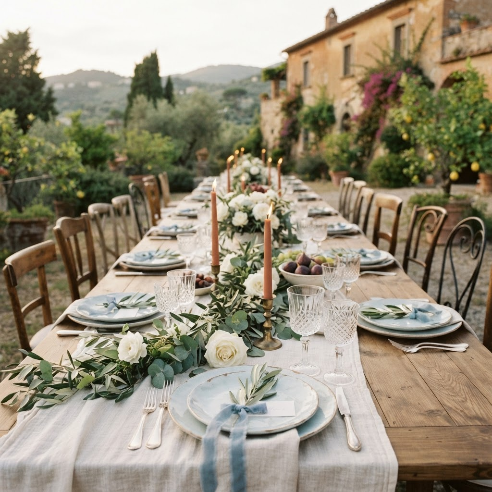
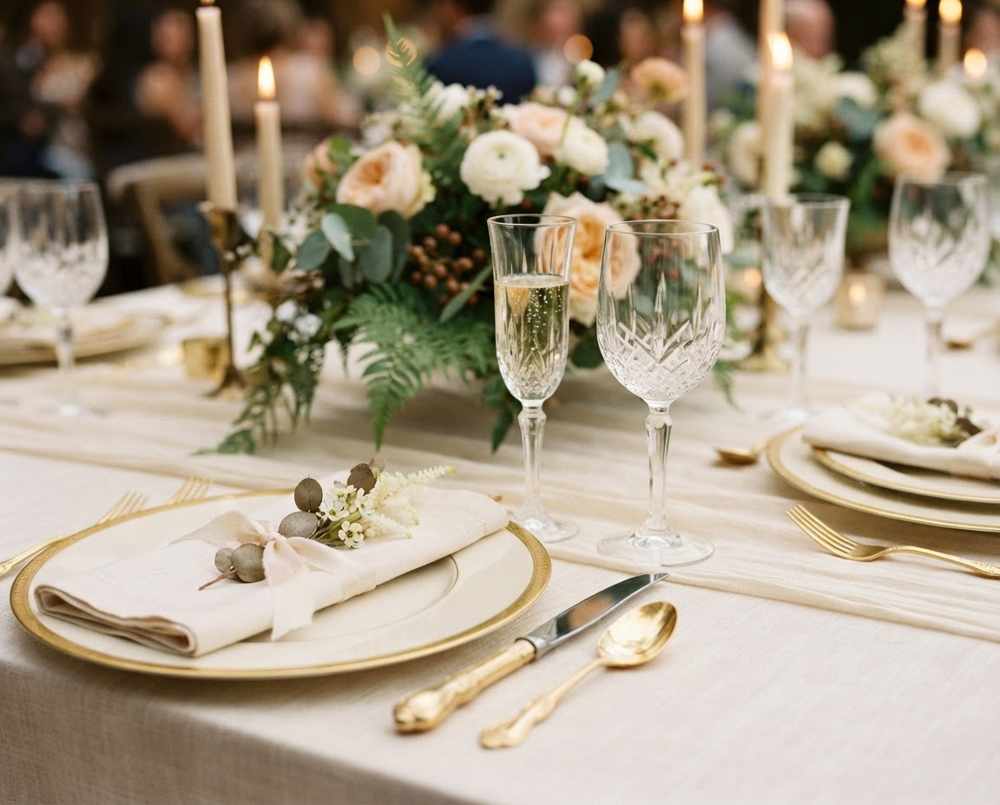
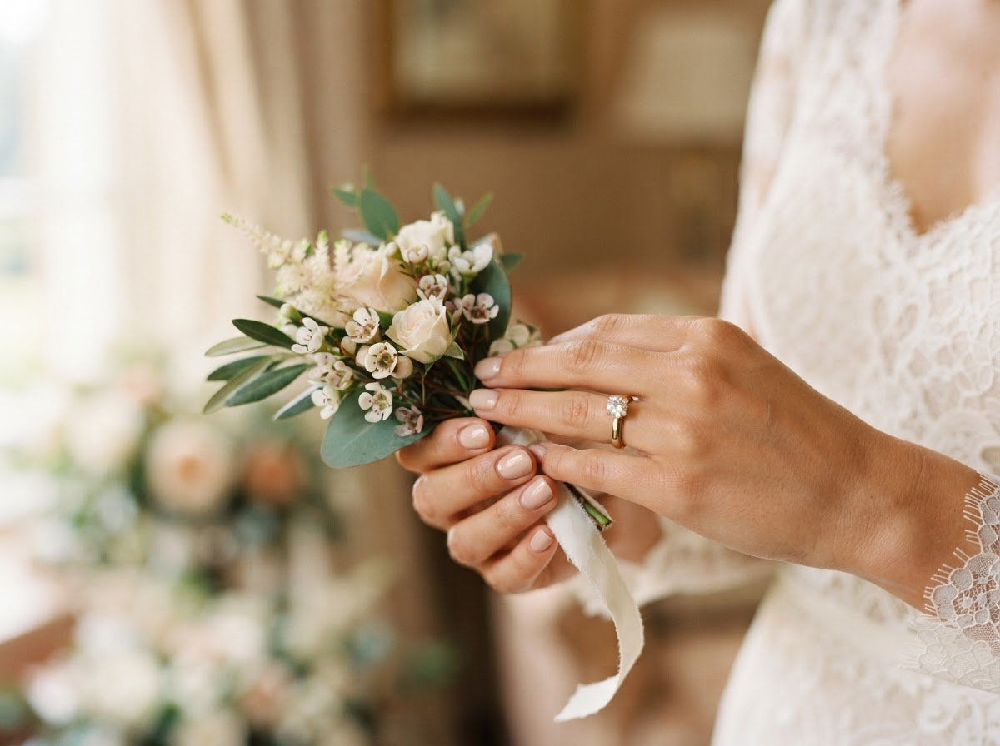
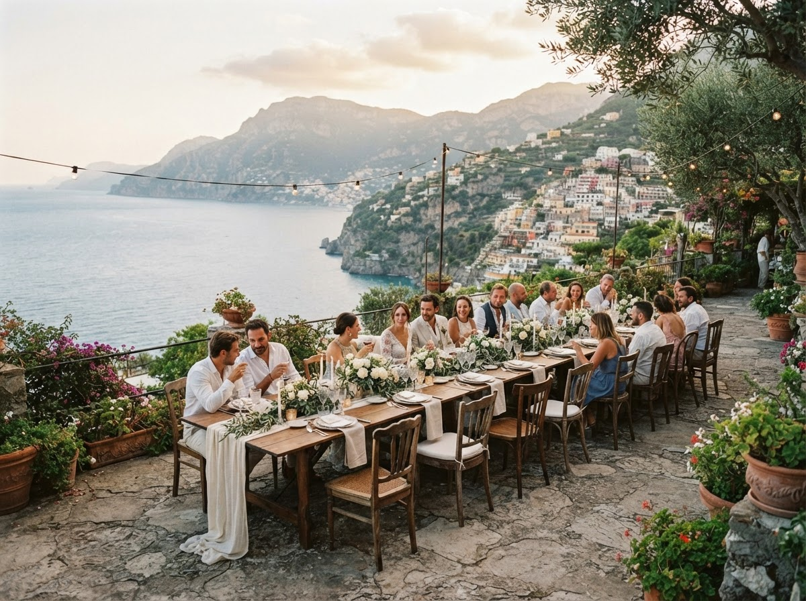

Il vostro matrimonio, con calma
Il tuo sì, un tassello alla volta.
Budget, fornitori, invitati e scadenze in uno spazio condiviso. Per organizzare ogni dettaglio con maggiore tranquillità.
Prima versione in costruzione · Lista d'attesa gratuita · Nessun pagamento ora
01 / Il sì

01
Il budget che torna sempre.
Previsto, firmato, pagato e residuo per ogni voce. Senza rifare i conti ogni sera.

02
Scadenze che non si perdono.
Acconti, saldi e conferme con la loro data. Le attività si calcolano a partire dal giorno del matrimonio.
- 12+ mesiData e location
- 9–11 mesiFornitori e preventivi
- 6–8 mesiSave the date
- 3–5 mesiInviti e menù
- SettimanaScaletta

03
Chi viene e chi deve ancora rispondere.
Nuclei familiari, risposte e menù nello stesso elenco. Un invito, una riga.

Tante cose da tenere insieme. Un posto in cui ritrovarle.
Nozze in Ordine · Dalla Campania
Il progetto
Come e perché stiamo costruendo questo.
Partiamo dalla Campania, parlando con coppie e planner, prima di costruire. Le foto qui sono evocative — non mostrano eventi che abbiamo organizzato né un team.
- 01
Ascoltiamo.
Parliamo con coppie e wedding planner campane. 25 minuti a testa: ci interessa capire cosa oggi fa perdere tempo e cosa manca davvero.
- 02
Proviamo.
Uno spazio prototipale con dati di esempio, da provare insieme alle prime persone interessate. Niente promesse: solo prove reali.
- 03
Costruiamo.
La prima versione nasce da ciò che le conversazioni e le prove ci diranno. Ti scriviamo quando è pronta: nessun pagamento ora.

Dove siamo ora
Stiamo raccogliendo le prime iscrizioni. La prima versione non è ancora disponibile.
Entra in lista d'attesa.
Lista gratuita, nessun pagamento. Ti scriviamo solo quando la prima versione è pronta, partendo dalla Campania.